Data Bodrum · Bilişim ve Otomasyon
Bodrum'da kamera, yangın, otomatik kapı ve kepenk sistemleri
Villanıza, sitenize, otelinize ya da dükkânınıza gereken güvenlik ve otomasyon sistemlerini tek ekip kuruyor. Keşif ücretsiz, kurulu sistemlere 7/24 teknik destek.
- 2016'dan beri Bodrum'da
- Yarımadanın her yerine servis
- 7/24 teknik destek
- Google puanı 5,0
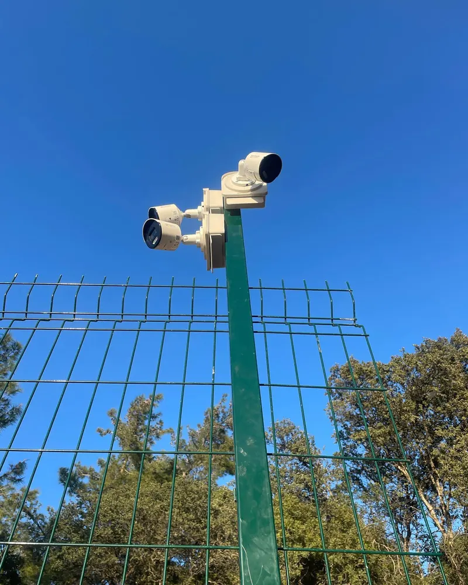
Dört ana alan
Güvenliği tek firmadan kurun
Kamerayı bir firmaya, kapıyı ikincisine, yangın tüpünü üçüncüsüne yaptırmayın. Keşfi, kurulumu ve bakımı tek ekip yapsın.
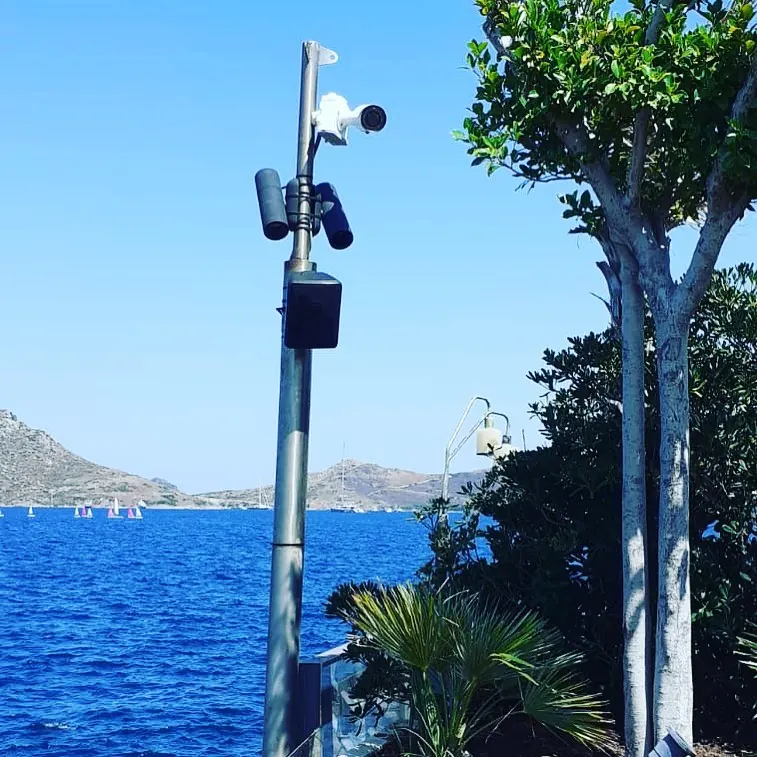
Güvenlik kamerası
IP ve analog kamera, kayıt cihazı, telefondan canlı izleme, plaka tanıma.
DetaylarYangın sistemleri
Duman dedektörü, yangın tüpü ve periyodik bakım, dolap ve hidrant, sprinkler, davlumbaz söndürme.
Detaylar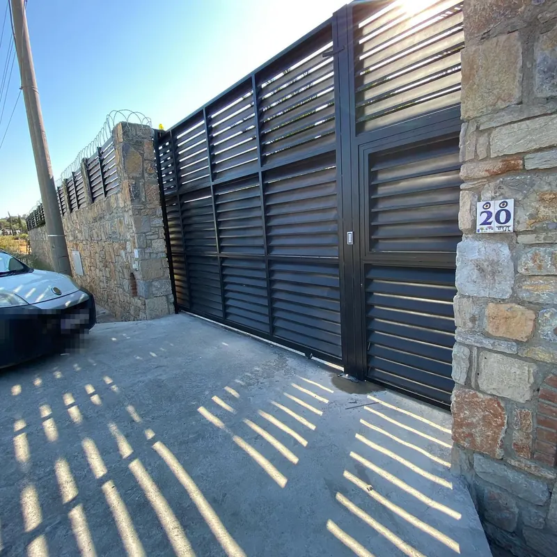
Otomatik kapı
Kayar ve açılır bahçe kapısı motoru, garaj kapısı, fotoselli kapı, kumanda ve arıza servisi.
DetaylarKepenk
Motorlu kepenk kurulumu, elle açılan kepenge motor takma, kumanda ve bakım.
DetaylarDiğer sistemler
Alarmdan santrale
Kimler için
Bodrum'un villasından beach club'ına
- Villa ve müstakil ev
- Site ve apartman yönetimi
- Otel ve pansiyon
- Restoran, kafe ve beach club
- Mağaza ve ofis
- Depo, sanayi ve şantiye
- Marina ve tekne
Nasıl çalışıyoruz
Keşiften bakıma dört adım
Ücretsiz keşif
Yerinde bakıyor, ihtiyacı ve kör noktaları birlikte belirliyoruz.
Yazılı teklif
Malzeme ve işçiliği açıkça yazılı olarak iletiyoruz.
Kurulum
Kablolama, montaj, ayar ve kullanım eğitimi.
Bakım ve destek
Periyodik bakım, arıza servisi ve 7/24 teknik destek.
İşlerimizden
Bodrum'da kurduğumuz sistemler
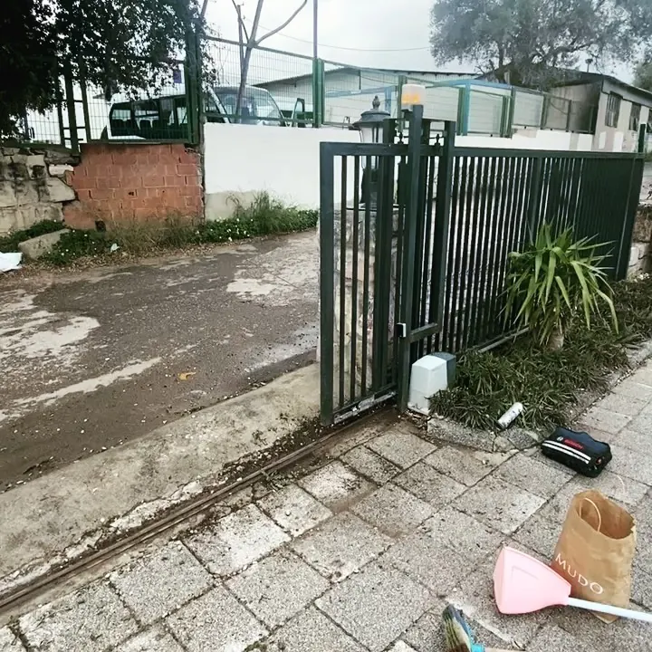
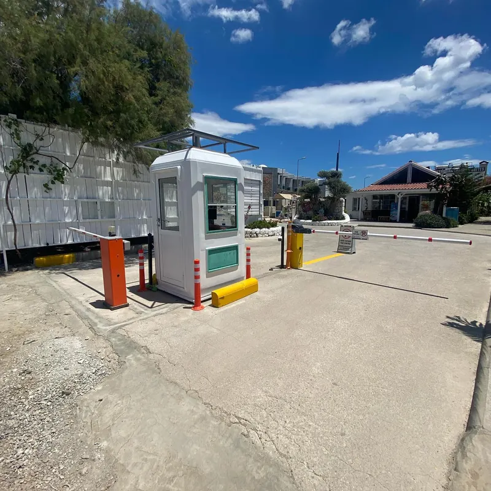
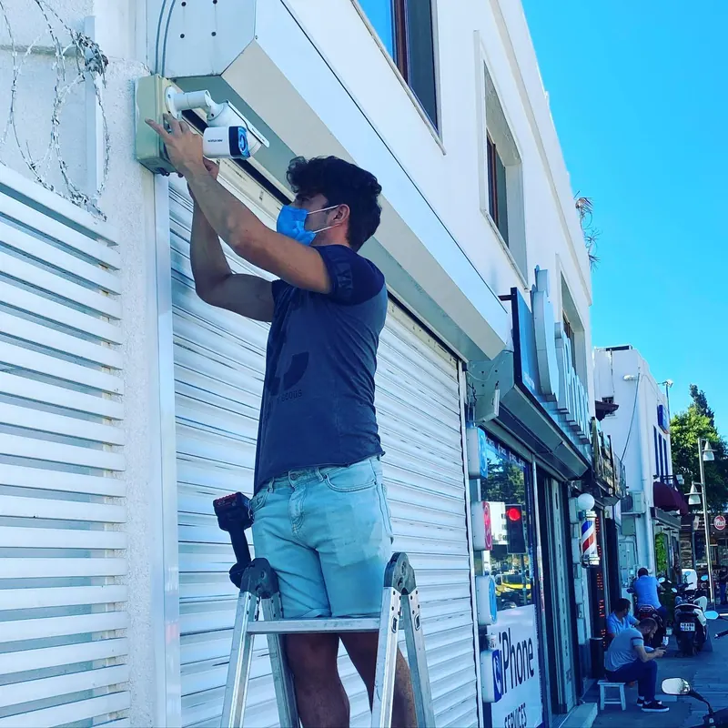
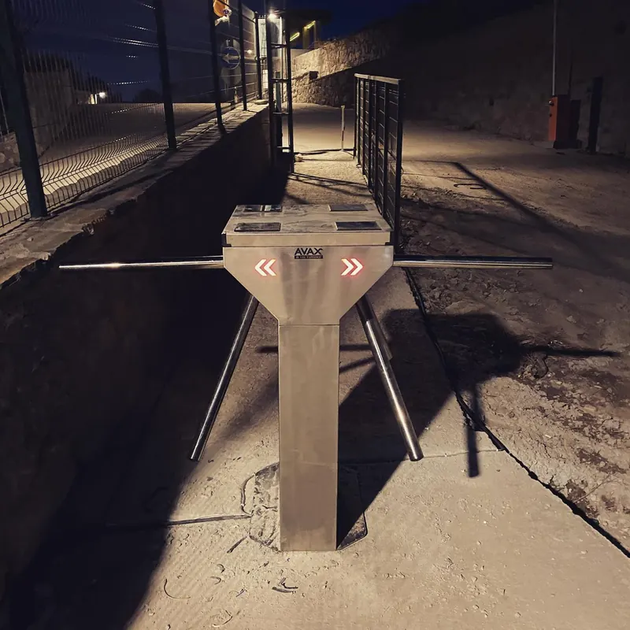
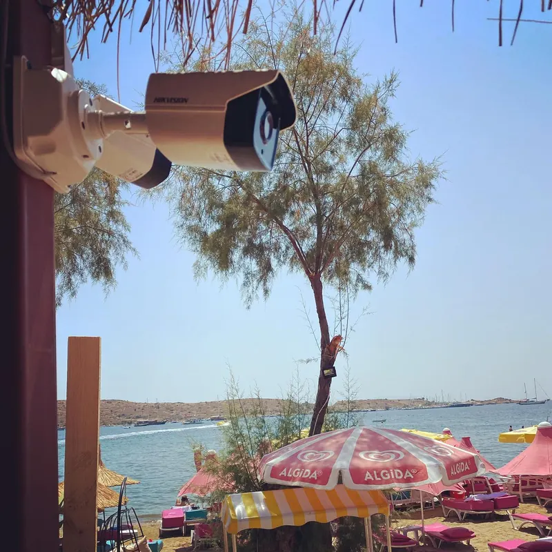
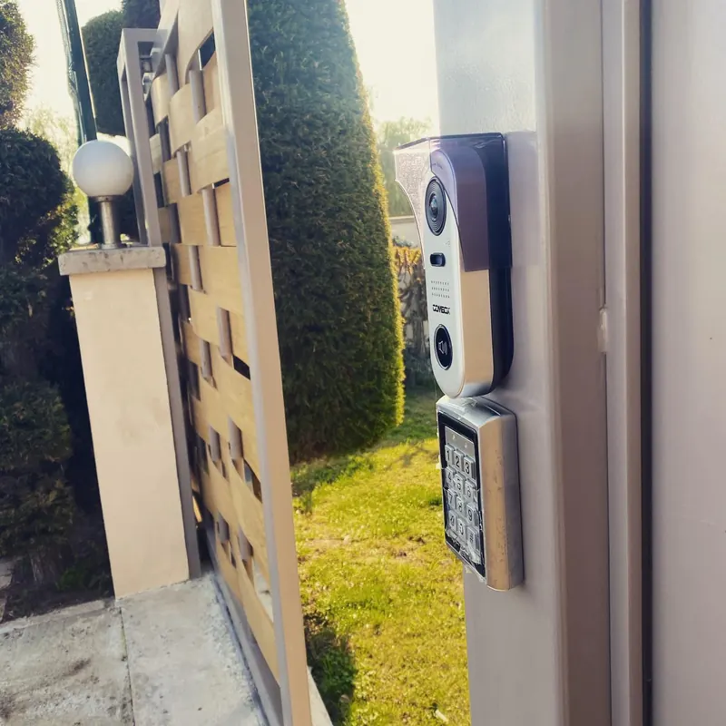
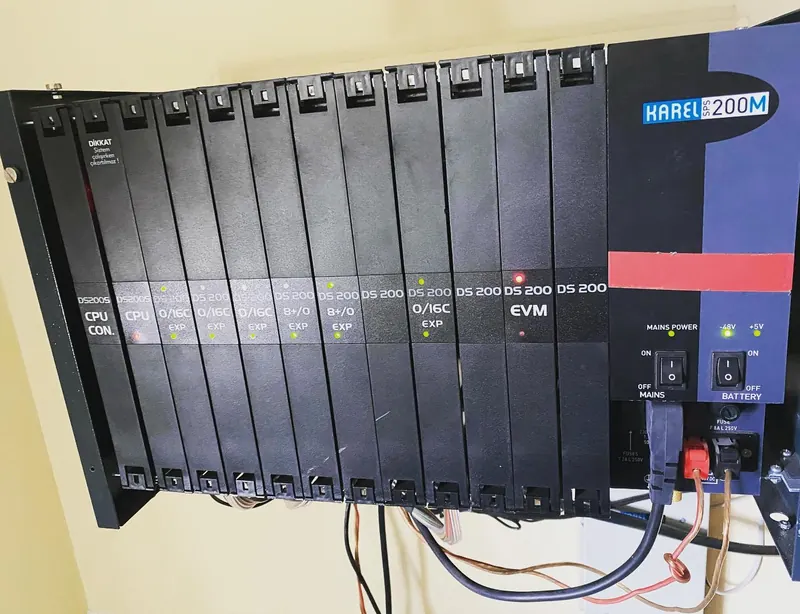
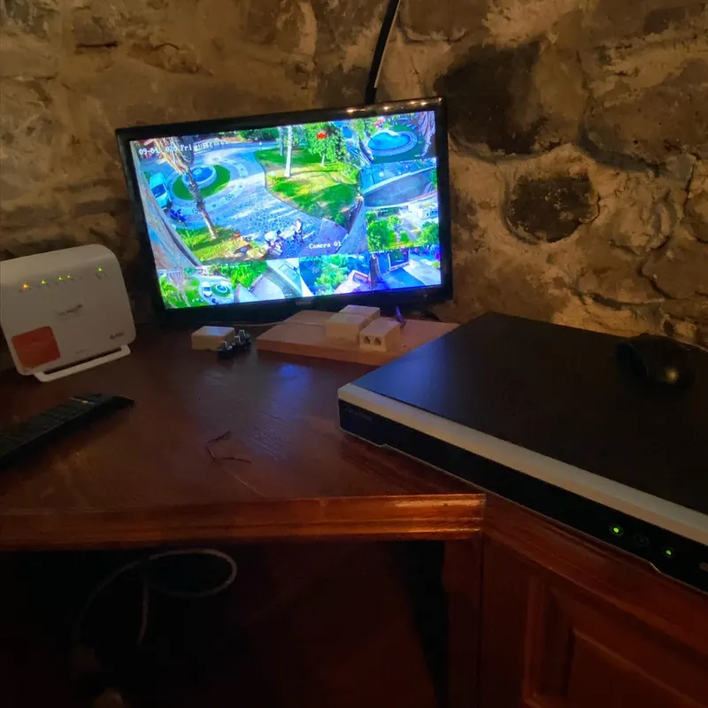
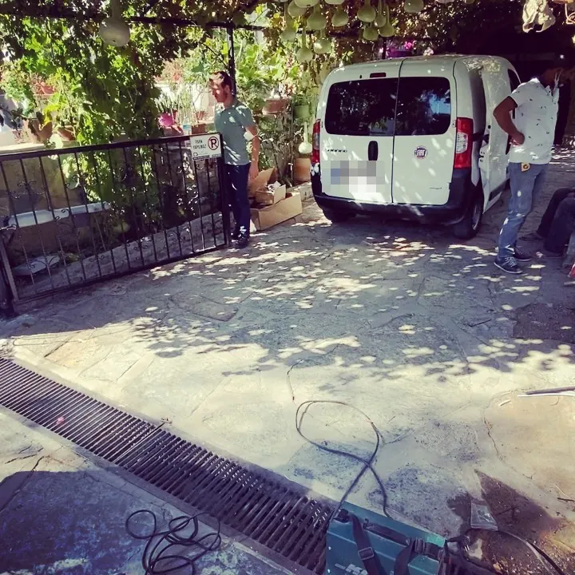
Müşterilerimiz
Google'da 5,0 puan
★★★★★İlgi ve alakalarından dolayı teşekkür ederim, özellikle Ersin Bey bütün sorunlarla ilgilendi ve çözüm getirdi.
★★★★★Yapılan işlemler başarılı, çok memnun kaldık. Her şey istediğimiz gibi gelişti ve sonuçlandı.
★★★★★Evimin internetini Ersin Bey kolaylıkla halletti, çok teşekkür ederim.
Hizmet bölgeleri
Bodrum yarımadasının tamamı
- Bodrum Merkez
- Konacık
- Gümbet
- Bitez
- Ortakent
- Yahşi
- Turgutreis
- Akyarlar
- Gümüşlük
- Yalıkavak
- Gündoğan
- Göltürkbükü
- Torba
Sık sorulanlar
Merak edilenler
Keşif ücretli mi?
Hayır. Bodrum yarımadasında keşif ücretsizdir; yerinde bakıp ihtiyacınızı birlikte belirliyoruz.
Hangi bölgelere hizmet veriyorsunuz?
Bodrum yarımadasının tamamına: Bodrum Merkez, Konacık, Gümbet, Bitez, Ortakent, Yahşi, Turgutreis, Akyarlar, Gümüşlük, Yalıkavak, Gündoğan, Göltürkbükü, Torba.
Kamera görüntülerini telefondan izleyebilir miyim?
Evet. Kurulumda telefon uygulamasını ayarlıyor, canlı görüntü ve kayıt izlemeyi gösteriyoruz.
Mevcut bahçe kapıma ya da kepengime motor takılır mı?
Çoğu kapıya ve kepenge takılabilir. Keşifte ağırlık ve ölçüye göre uygun motoru belirliyoruz.
Kurduğunuz sistemlere bakım yapıyor musunuz?
Evet. Periyodik bakım, arıza servisi ve 7/24 teknik destek veriyoruz; yangın tüplerinin yıllık kontrolü de buna dahil.
Ücretsiz keşif
Yerinde bakalım, doğru sistemi birlikte seçelim
Formu doldurun, mesajınız WhatsApp'tan bize gelsin. Ya da doğrudan arayın.
- 0543 399 28 63Telefon ve WhatsApp
- Pazartesi–Cumartesi 09:00–17:00Kurulu sistemler için 7/24 teknik destek
- Çırkan Mah. Hamza Sadi Özbek Cd. No:23/4, 48400 Bodrum / MuğlaHaritada aç ve yol tarifi al